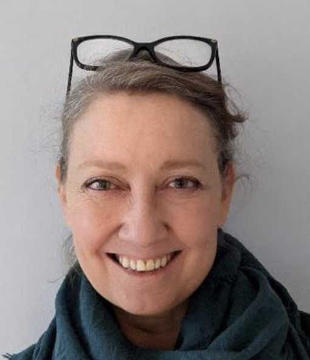

Anna-Sofia Maurin
Professor of Theoretical Philosophy · Programme coordinator
Anna-Sofia Maurin works primarily in metaphysics and metametaphysics. Her research includes tropes, unity in complexity, the epistemology of metaphysics, regress arguments, metaphysical explanation, social ontology and non-causal explanation.